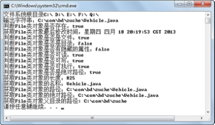
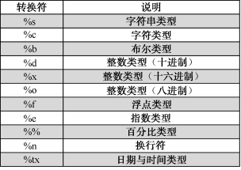
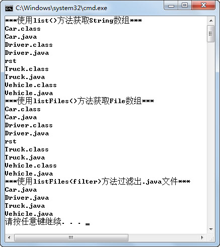

4.1 File类
Java是面向对象的语言，要想把数据存到文件中，就必须有一个对象表示这个文件。File类的作用是代表一个特定的文件或目录，并提供了若干方法对这些文件或目录进行各种操作。File类在java.io包下，与系统输入/输出相关的类通常都在此包下。
4.1.1 File类构造方法
构造一个File类的实例，并不是创建这个目录或文件，而创建的是该路径（目录或文件）的一个抽象，它可能真实存在，也可能不存在。
File类的构造方法有如下四种。
- File(File parent, String child)
根据parent抽象路径名和child路径名字符串创建一个新File实例。
- File(String pathname)
通过将给定路径名字符串转换为抽象路径名来创建一个新File实例。
- File(String parent, String child)
根据parent路径名字符串和child路径名字符串创建一个新File实例。
- File(URI uri)
通过将给定的URI类对象转换为一个抽象路径名来创建一个新的File实例。
在创建File类的实例时，有个问题尤其需要注意。Java语言一个显著的特点是，Java是跨平台的，可以做到“一次编译、处处运行”，所以在使用File类创建一个路径的抽象时，需要保证创建的这个File类也是跨平台的。但是不同的操作系统对文件路径的设定各有不同的规则，例如在Windows操作系统下，一个文件的路径可能是“C:\com\bd\zuche\TestZuChe.java”，而在Linux和UNIX操作系统下，文件路径的格式就类似于“/home/bd/zuche/TestZuChe.java”。
File类提供了一些静态属性，通过这些静态属性，可以获得Java虚拟机所在操作系统的分隔符相关信息。
- File.pathSeparator
与系统有关的路径分隔符，它被表示为一个字符串。
- File.pathSeparatorChar
与系统有关的路径分隔符，它被表示为一个字符。
- File.separator
与系统有关的默认名称分隔符，它被表示为一个字符串。
- File.separatorChar
与系统有关的默认名称分隔符，它被表示为一个字符。
在Windows平台下编译、运行下面的程序，运行结果如图4.1所示。如果在Linux平台下运行，则PATH分隔符为“：”，而路径分隔符为“/”。
import java.io.File;
public class TestFileSeparator {
public static void main(String[] args) {
System.out.println("PATH分隔符：" + File.pathSeparator);
System.out.println("路径分隔符：" + File.separator);
}
}

图4.1 File类分隔符
4.1.2 File类使用
下面通过一个具体的例子来演示File类的一些常用方法，不易理解的代码通过注释加以描述。
import java.io.*;
public class TestFile{
public static void main(String args[]) throws IOException {
System.out.print("文件系统根目录");
for (File root : File.listRoots()) {
//format方法是使用指定格式化字符串输出
System.out.format("%s ", root);
}
System.out.println();
showFile();
}
public static void showFile() throws IOException{
//创建File类对象file，注意使用转义字符“\”
File f = new File("C:\\com\\bd\\zuche\\Vehicle.java");
File f1 = new File("C:\\com\\bd\\zuche\\Vehicle1.java");
//当不存在该文件时，创建一个新的空文件
f1.createNewFile();
System.out.format("输出字符串：%s%n", f);
System.out.format("判断File类对象是否存在：%b%n", f.exists());
//%tc，输出日期和时间
System.out.format("获取File类对象最后修改时间：%tc%n", f.lastModified());
System.out.format("判断File类对象是否是文件：%b%n", f.isFile());
System.out.format("判断File类对象是否是目录：%b%n", f.isDirectory());
System.out.format("判断File类对象是否有隐藏的属性：%b%n", f.isHidden());
System.out.format("判断File类对象是否可读：%b%n", f.canRead());
System.out.format("判断File类对象是否可写：%b%n", f.canWrite());
System.out.format("判断File类对象是否可执行：%b%n", f.canExecute());
System.out.format("判断File类对象是否是绝对路径：%b%n", f.isAbsolute());
System.out.format("获取File类对象的长度：%d%n", f.length());
System.out.format("获取File类对象的名称：%s%n", f.getName());
System.out.format("获取File类对象的路径：%s%n", f.getPath());
System.out.format("获取File类对象的绝对路径：%s%n",f.getAbsolutePath());
System.out.format("获取File类对象父目录的路径: %s%n", f.getParent());
}
}
编译、运行程序，运行结果如图4.2所示。

图4.2 File类对象的常用方法
程序中的代码for(File root:File.listRoots()){…}，通过一个增强for循环，遍历File.listRoots()方法获取的根目录集合（File对象集合）。
f1.createNewFile();是当不存在该文件时，创建一个新的空文件，所以在C:\com\bd\zuche\目录下创建了一个空文件，文件名为Vehicle1.java。另外，这个方法在执行过程中，如果发生I/O错误，会抛出IOException检查时异常，必须要进行显式的捕获或继续向外抛出该异常。
System.out.format(format, args)是使用指定格式化字符串输出，其中format参数为格式化转换符。关于转换符的说明如图4.3所示。

图4.3 转换符说明
4.1.3 静态导入
从JDK1.5开始，增加了静态导入的特性，用来导入指定类的某个静态属性或方法，或全部静态属性或方法，静态导入使用import static语句。
下面通过静态导入前后的代码进行对比，理解静态导入的使用。
//静态导入前的代码
public class TestStatic
{
public static void main(String[] args)
{
System.out.println(Integer.MAX_VALUE);
System.out.println(Integer.toHexString(12));
}
}
//静态导入后的代码
import static java.lang.System.out;
import static java.lang.Integer.*;
public class TestStatic2
{
public static void main(String[] args)
{
out.println(MAX_VALUE);
out.println(toHexString(12));
}
}
通过代码对比可以看出，使用静态导入省略了System和Integer的书写，编写代码相对简单。在使用静态导入的时候，需要注意以下几点：
（1）虽然在语言表述上说的是静态导入，但在代码中必须写import static。
（2）提防静态导入冲突。例如，同时对 Integer 类和 Long 类执行了静态导入，引用MAX_VALUE属性将导致一个编译器错误，因为Integer类和Long类都有一个MAX_VALUE常量，编译器不知道使用哪个MAX_VALUE。
（3）虽然静态导入让代码编写相对简单，但毕竟没有完整地写出静态成员所属的类名，程序的可读性有所降低。
在上一小节TestFile代码中，System.out被书写了多次。对于这种情况，建议程序员编写代码时静态导入System类下的out静态变量，这样在之后代码内直接书写out即可代表此静态变量。
4.1.4 获取目录和文件
File类提供了一些方法，用来返回指定路径下的目录和文件。
- String[] list()
返回一个字符串数组，这些字符串指定此抽象路径名表示的目录中的文件和目录。
- String[] list(FilenameFilter filter)
返回一个字符串数组，这些字符串指定此抽象路径名表示的目录中满足指定过滤器的文件和目录。
- File[] listFiles()
返回一个抽象路径名数组，这些路径名表示此抽象路径名表示的目录中的文件和目录。
- File[] listFiles(FilenameFilter filter)
返回一个抽象路径名数组，这些路径名表示此抽象路径名表示的目录中满足指定过滤器的文件和目录。
接下来通过一个案例，演示File类的方法的使用，其中FilenameFilter过滤器只需要简单了解即可。
import java.io.*;
public class TestListFile{
public static void main(String args[]) throws IOException {
File f = new File("C:\\com\\bd\\zuche");
System.out.println("***使用list()方法获取String数组***");
//返回一个字符串数组，由文件名组成
String[] fNameList = f.list();
for(String fName:fNameList){
System.out.println(fName);
}
System.out.println("***使用listFiles()方法获取File数组***");
//返回一个File数组，由File实例组成
File[] fList = f.listFiles();
for(File f1:fList){
System.out.println(f1.getName());
}
//使用匿名内部类创建过滤器，过滤出.java结尾的文件
System.out.println("***使用listFiles(filter)方法过滤出.java文件***");
File[] fileList = f.listFiles(new FileFilter() {
public boolean accept(File pathname) {
if(pathname.getName().endsWith(".java"))
return true;
return false;
}
});
for(File f1:fileList){
System.out.println(f1.getName());
}
}
}
编译、运行程序，其运行结果如图4.4所示。

图4.4 获取目录和文件